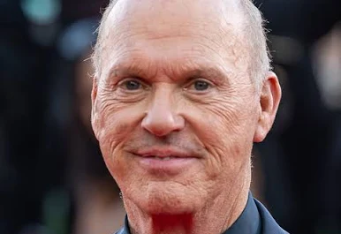
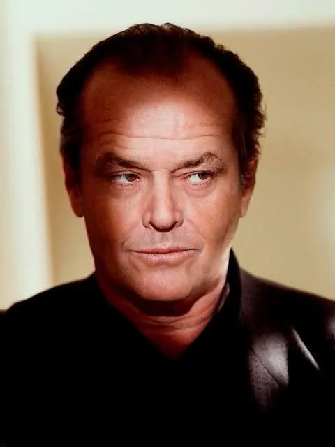
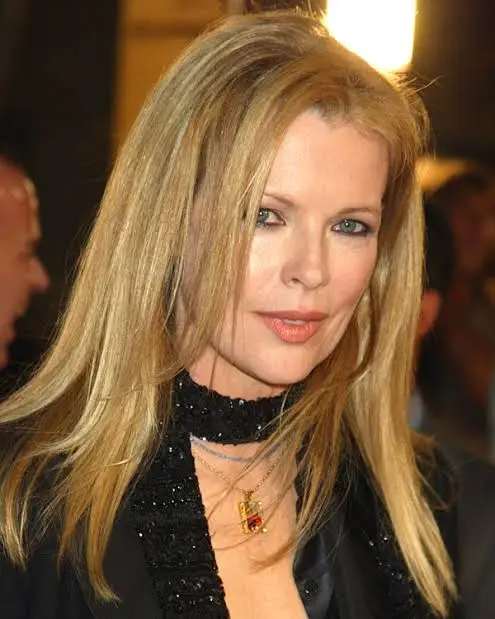
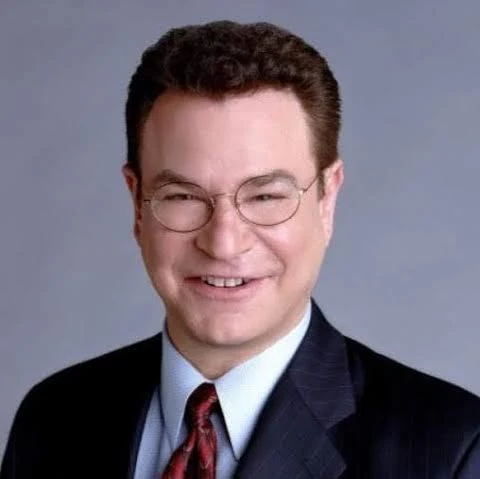
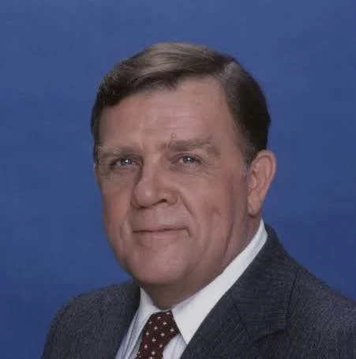
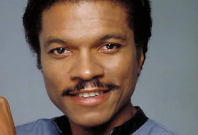
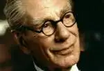
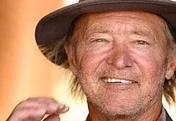

«Бэ́тмен» (англ. Batman) — супергеройский фильм режиссёра Тима Бёртона, основанный на комиксах о Бэтмене — известном персонаже DC Comics. Фильм имеет характерную для Бёртона «готическую» визуальную стилистику и мрачноватую атмосферу. Главную роль исполнил Майкл Китон, также в фильме приняли участие Джек Николсон, Ким Бейсингер, Роберт Вул и Джек Пэланс. В фильме Бэтмен противостоит злодею, который известен под псевдонимом Джокер. Данный фильм послужил первой частью целой серии фильмов о Бэтмене от компании Warner Bros.
Майкл Кітон: — Брюс Вейн / Бетмен ♥ 
Джек Ніколсон: — Джокер / Джек Нап'єр ♥ 
Кім Бейсінгер: — Вікі Вейл ♥ 
Роберт Вул: — Александр Нокс ♥ 
Пет Гінгл: — Комісар Гордон ♥ 
Біллі Ді Вільямс: — Харві Дент ♥ 
Майкл Гоф: — Альфред ♥ 
Трейсі Волтер: — Боб-Блазень ♥ 